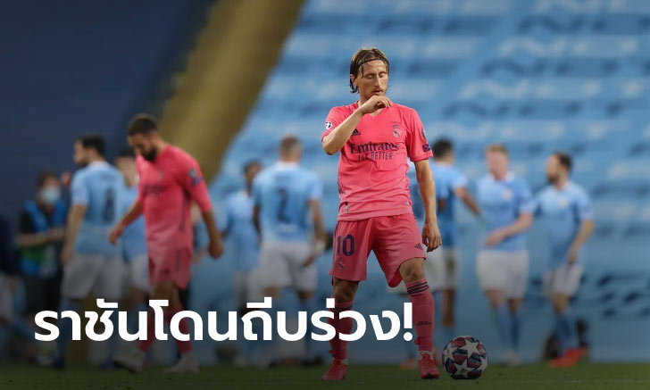
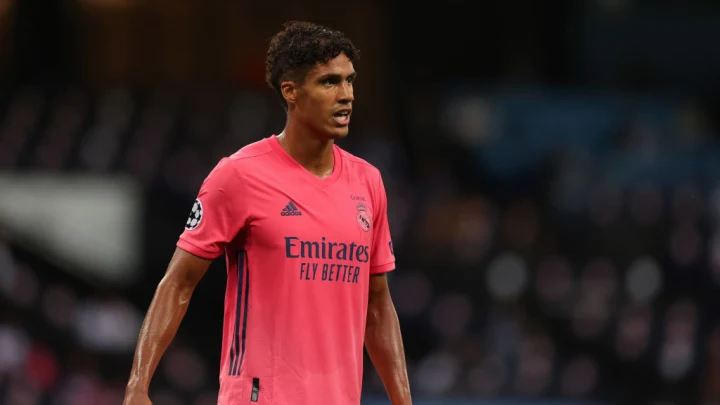
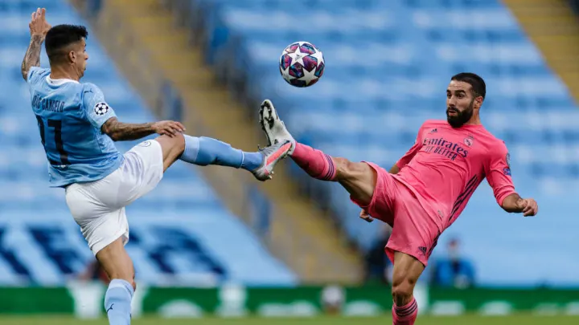
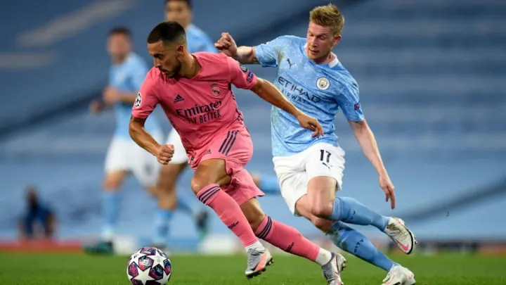
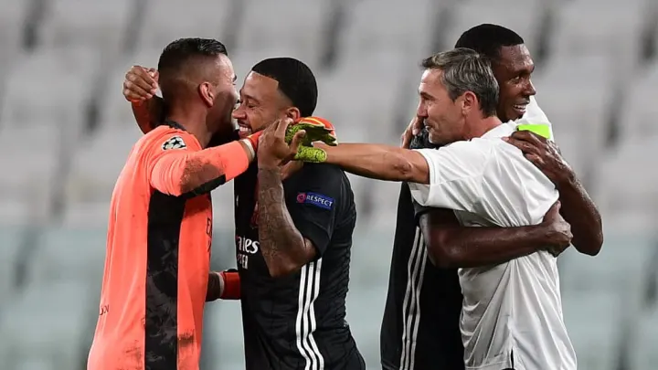

ทีมมุ้ยชนะทีมเจ! ชิมิสึ เอส-พัลส์ เปิดรังทุบ ซัปโปโร 3-1 ศึก"ไทย ดาร์บี้" เจลีก
การแข่งขันฟุตบอล เมจิ ยาสึดะ เจลีกวัน ฤดูกาล 2020 ซึ่งเป็นศึก "ไทย ดาร์บี้" ชิมิสึ เอส-พัลส์ เปดรังพบกับ ฮอกไกโด คอนซาโดเล่ ซัปโปโร
โดยเกมนี้ "เจ" ชนาธิป สรงกระสินธ์ ออกสตาร์เป็น 11 คนแรก ในวันนี้ ส่วน "เจ้ามุ้ย" ธีรศิลป์ แดงดา ศูนย์หน้าของ ชิมิสึ เอส-พัลส์ มีชื่อบนซุ้มม้านั่งสำรอง ซึ่งเกมในวันนี้ ชิมิสึ เอส-พัลส์ ใส่ชุดแข่งขันที่มีชื่อนักเตะเป็นภาษาไทย
ผลการแข่งขันปรากฎว่า ชิมิสึ เอส-พัลส์ ฟอร์มเยี่ยมเอาชนะ ฮอกไกโด คอนซาโดเล่ ซัปโปโร 3-1 โดยธีรศิลป์ แดงดา ได้ลงสนามในนาที่ 83 ของเกม ส่วน ชนาธิป สรงกระสินธ์ ถูกถอดออกในนาทีที่ 85
ชัยชนะของ ชิมิสึ เอส-พัลส์ ทำให้พวกเขากระโดดขึ้นมาอยู่ในอันดับที่ 14 ของตารางการแข่งขัน หลังจากผ่านไป 9 นัด ส่วน ฮอกไกโด คอนซาโดเล่ ซัปโปโร อยู่อันดับที่ 8 ของตารางโดยมี 12 แต้มจากการลงสนาม 9 นัด
แมนฯ ซิตี้ เขี่ย เรอัล มาดริด : เก็บตกประเด็นร้อนหลังเกม ยูฟ่า แชมเปี้ยนส์ลีก รอบ 16 ทีมสุดท้าย

1. วาราน แจกทอง!
หากจะหาแพะในเกมวันนี้ที่ทำให้ เรอัล มาดริด ต้องพ่ายแพ้กลับไป คงหนีไม่พ้น ราฟาเอล วาราน กองหลังดีกรีทีมชาติฝรั่งเศสชุดแชมป์โลกปี 2018 ที่ว่ากันว่าเป็นหนึ่งในเซ็นเตอร์แบ็คที่ดีที่สุดในโลกคนหนึ่ง ณ ปัจจุบัน
แต่วันนี้เจ้าตัวกลับมอบโชค 2 ชั้นให้กับ เรือใบสีฟ้า โดยในครึ่งแรกเขาทำลั่นเสียบอลในกรอบเขตโทษและโดน เชซุส ฉกบอลไปได้ก่อนจะจ่ายให้ ราฮีม ยิงง่าย ๆ เข้าไป ซึ่งยังไม่จบเพียงแค่นั้นเพราะในช่วงครึ่งเวลาหลัง เจ้าตัวได้จัดการแจกทองอีกครั้ง คราวนี้เป็นการโหม่งคืนหลังสั้นเกินไป และเป็น เชซุส เจ้าเก่าที่ถึงบอลก่อนและยิงสวนตัว กูร์ตัวส์ เข้าไปนิ่ม ๆ นั่นจึงทำให้ แฟน ๆ เรือใบสีฟ้า ถึงกับพากันมอบรางวัล แมน ออฟ เดอะแมทช์ ในค่ำคืนนี้ให้เขากลับบ้านไปเชยชมเลยทีเดียว
2. แบ็คสองฝั่ง เรือใบ ฟอร์มโดดเด่น
เกมนี้ เป๊ป กวาร์ดิโอลา ตัดสินใจเรียกใช้งาน ไคล์ วอร์คเกอร์ ในตำแหน่งแบ็คขวา และ ชูเอา คันเซโล ทางฝั่งซ้าย ซึ่งทั้งสองคนสามารถโชว์ฟอร์มได้อย่างยอดเยี่ยมในวันนี้ ทั้งในเกมรับ ที่สามารถจัดการรับมือกับเหล่าผู้เล่นริมเส้นสุดอันตรายทั้งสองฝั่งของ ราชันชุดขาว ได้ค่อนข้างดี โดยเฉพาะ วอร์คเกอร์ ที่สามารถเก็บ เอเดน อาซาร์ เข้ากระเป๋าไปได้อย่างอยู่หมัด ส่วนเกมรุกทั้งสองคนก็มีจังหวะลุยพาบอลขึ้นไปข้างหน้าสวย ๆ ให้เห็นหลายครั้ง ซึ่งทางด้าน คันเซโล เองก็มีจังหวะได้จบจนเกือบเปลี่ยนเป็นประตูให้ทีมได้อยู่เหมือนกัน
3. อาซาร์ ไม่ใช่ทุกอย่างของ ราชัน
หากใครได้มีโอกาสรับชมเกมในวันนี้ จะเห็นได้ว่า เอเดน อาซาร์ นอกจากช่วงต้นเกมแล้วก็แทบจะไม่มีบทบาทร่วมกับทีมอีกเลย ซึ่งนี่ก็ไม่ใช้นัดแรกที่เป็นแบบนี้ เพราะตลอดฤดูกาลที่ผ่านมากับ ราชันชุดขาว บ่อยครั้งที่เจ้าตัวได้โอกาสลงสนามแต่ก็ไม่สามารถสร้างอิมแพคใดหรือความแตกต่างใด ๆ ให้กับเกมได้
ซึ่งข้อแตกต่างที่ชัดเจนสมัยที่เขาเล่นให้กับ เชลซี นั่นคือ ที่ เดอะ บริดจ์ อาซาร์ ถูกยกให้เป็นทุกอย่างของทีม โดยเฉพาะปีท้าย ๆ กับ สิงห์บลู ที่เจ้าตัวรับหน้าที่เป็นตัวฟรี จะยิง จะจ่าย จะโชว์อะไรได้เต็มที่ไม่ต้องมีกั๊ก แตกต่างกับที่ เบอร์นาเบว การที่ เรอัล มาดริด เป็นศูนย์รวมของซุเปอร์สตาร์นั่นทำให้บทบาทของเขาแตกต่างไปโดยสิ้นเชิง ทั้งรูปแบบการเล่นที่ต้องเน้นความเป็นทีมเวิร์คมากขึ้น รวมถึงอาการบาดเจ็บที่รุมเร้าตลอดทั้งปีที่ผ่านมา มันส่งผลถึงความมั่นใจในการลากเลื้อยของเจ้าตัวที่ดูจะลดลงกว่าเมื่อก่อนมาก ก็คงต้องมาลุ้นกันว่าปีที่สองของเขากับทีมนั้น จะสามารถคืนฟอร์มเก่งและเรียกความเชื่อมั่นกลับมาได้หรือไม่
4. เรือใบ ปะทะ ลียง รอบ 8 ทีม!
ต้องบอกว่าผิดคาดเล็ก ๆ อยู่เหมือนกัน ที่คู่แข่งของ แมนเชสเตอร์ ซิตี้ ในรอบ 8 ทีมสุดท้ายนั้น ไม่ใช่ ยูเวนตุส ที่มีซุเปอร์สตาร์อย่าง คริสเตียโน โรนัลโด เป็นตัวชูโรง แต่กลับเป็น โอลิมปิก ลียง ทีมม้ามึดจากลีกเอิง ที่สามารถโค่นทัพม้าลายด้วยสกอร์รวม 2 นัดที่ 2-2 แต่มีอเวย์โกลที่ดีกว่า
ซึ่งถ้าจะบอกว่าเป็นงานที่สบายกว่าการเจอ ยูเว่ ก็คงพูดได้ไม่เต็มปากนัก เพราะฟุตบอลระดับนี้ยิ่งโดยเฉพาะรอบ 8 ทีมสุดท้าย ไม่ว่าทีมใดที่เข้ามาถึงรอบนี้ได้ย่อมไม่ธรรมดาแน่ ๆ อยู่แล้ว แถมพวกเขายังมีดีพอจะผ่าน ทีมม้าลาย มาได้ ที่สำคัญที่สุด รอบต่อ ๆ ไปจะเล่นกับแบบนัดเดียวรู้ผลเพราะงั้นอะไรก็เกิดขึ้นได้ หากประมาทแม้แต่นิดเดียว ต่อให้ เรือใบ เป็นถึงเต็งหนึ่ง ก็อาจจะพบจุดจบแบบเดียวกับ ยูเวนตุส ก็เป็นได้